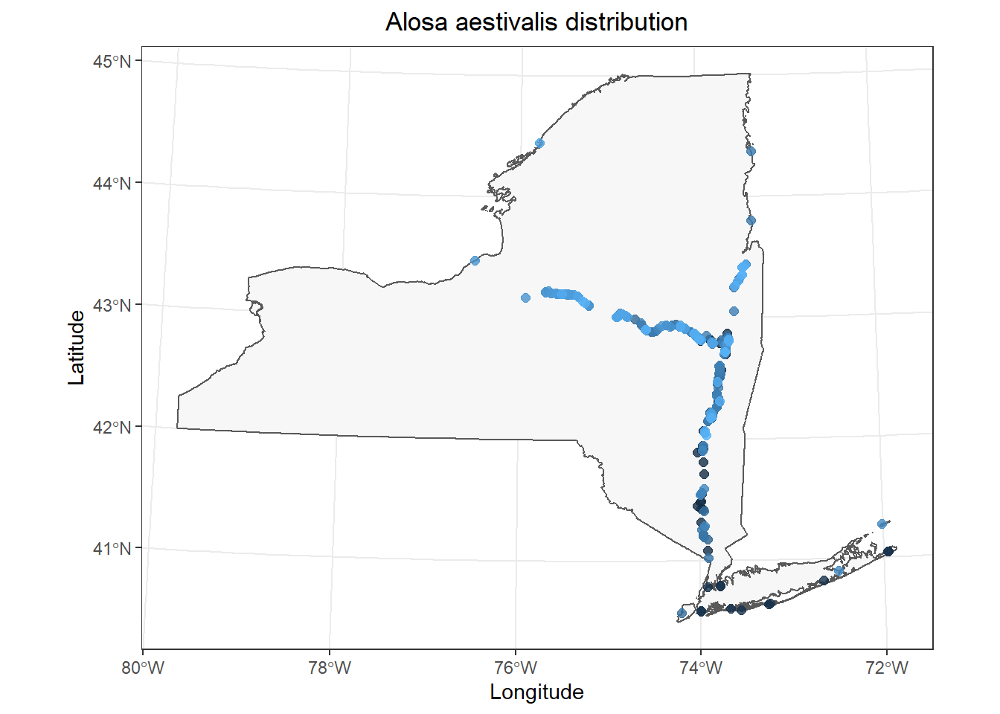
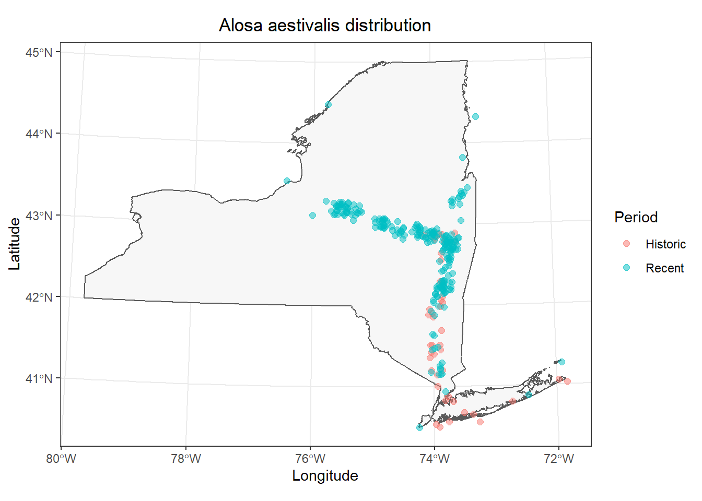

Introduction to spatial data in R
Introduction
As folks learned in the Introductory workshop, once we have a basic grasp on how R works, and how and where to find help, the learning process becomes a lot less painful, and we can start to build an appreciation for how convenient it is to have a script we can come back to again and again for things like plotting, statistics, and even (this time) some GIS. GIS in R??? Yup. To show off this convenience, and the power of R for dealing with spatial data that might otherwise require expensive or memory-hungry programs, we will spend some time reading, transforming, and plotting spatial data with a few of the “go-to” packages.
The plan for this workshop is to lay out some basics for how to read in spatial data, work with them, and make some pretty maps just to scratch the surface and get people ready for their own adventures. This is a round about way of my saying I really only use R to make maps so that’s what we are doing, but you can do a whole bunch of other cool stuff if that is your thing.
We will work with functions from a bunch of packages within the tidyverse for this session. We will load a few others as we go along in this module, and during the live-stream workshops. You can go ahead and load them all now if you like, or I will call them out one at a time as we go so you know who is doing what for us.
I’m going to load the tidyverse up front because it will provide a lot of utilities from various packages that we’ll use the whole way.
Data overview and management
Let’s start by reading in part of the data used to create the New York State Museum Atlas of Inland Fishes (Carlson et al. 2016). This particular data set is a subset of the whole that I pared down for convenience and to meet the maximum file size required by GitHub. We read the data in with the argument stringsAsFactors = FALSE because there are a lot of string variables in the data, and factors can add extra handling time to our workflow (see Introductory session tutorial ).
So, what are we working with here? Let’s have a look. Remember from the Introductory session that it might be useful to understand how R sees your data first and foremost. The most reliable method for doing this with dataframes is to look at the structure of your data using str() or to take a peek at the data in your Environment tab.
# Like this:
str(atlas)
'data.frame': 384762 obs. of 5 variables:
$ species : chr "Notropis anogenus" "Noturus miurus" "Lepomis gibbosus" "Ichthyomyzon unicuspis" ...
$ common_name: chr "Pugnose Shiner" "Brindled Madtom" "Pumpkinseed" "Silver Lamprey" ...
$ date : chr "5/26/1900" "9/26/1901" "9/26/1901" "5/14/1902" ...
$ x : num -76.5 -79.4 -79.4 -77.7 -73.9 ...
$ y : num 42.5 42.2 42.2 43.3 40.9 ...Now that we have an idea of what the data set looks like, let’s take a little closer look. First, there are a couple of things that we can do that will clean up our code down the road a little bit. Let’s have a quick look at our column names again.
Data manipulation
Now that we have had a quick look at our data, and we have made some changes for the sake of convenience, let’s dig a little deeper.
We are going to make a column for year to get started so we can plot out our data by that variable eventually. But first, we need to convert our dates into a more standard Date object that R can use. Note that this single line of code has probably frustrated more people than the entire remainder of the R language combined. Keep it somewhere you can find it.
Next, we will make a column for year in our data set using the year() function from the lubridate package:
As long as we are at it, we will also summarize the data set by species, year, and site (x and y pairs) and add a column for the number of records for each combination (I called it n_records, there is nothing magical about this name).
atlas_sum <- atlas %>%
group_by(species, year, x, y) %>%
summarize(n_records = n(), .groups = "keep")Finally, let’s get rid of the points with missing coordinates. We aren’t going to be able to use these for any kind of spatial analysis anyway.
Spatial data
Next, we will convert our points from the atlas data into a projected coordinate system that will allow us to overlay the data points onto the outline of the state and do some QC. This will take a few steps.
First, read in the shape file. I am going to use a function called readOGR() for this because it is a format that will work well with functions from the sp() package to transform the coordinate systems, but there are lots of options and those may save you a step or two here.
Now, we will assign coordinates to our atlas dataframe “officially” using the coordinates() function from the sp package. This will automatically convert our data.frame to a SpatialPoints-class object that R recognizes as a geo-spatial data type.
# Load sp package
library(sp)
# Make a copy that we will use for coordinate transformation
temp_data <- atlas_data
# Assign longitude and latitude to a
# SpatialPoints-class obj. This converts df to
# a spatial dataframe
coordinates(temp_data) <- c("x", "y")We will tell R that the coordinates in our fish_data are currently stored as longitudes (x) and latitudes (y) stored in a WGS84 datum (usually the default).
We can transform the longitude and latitude coordinates into a projected universal transverse mercator (UTM) system pretty easily, too. Here, the string that I pass to CRS came from the output of project4string(NY).
# Get the CRS for the NY shapefile so we can match them
ny_crs <- proj4string(NY)
# Get UTMs for the longitudes and latitudes using
# the coordinate system of our shape file
coord_utm <- spTransform(temp_data, CRS(ny_crs))Assign the UTMs to variables in our data set that we set aside above, and then use the coordinates() function we used above.
# Assign the coordinates to new columns
# in our dataframe
atlas_data$x <- coord_utm@coords[, 1]
atlas_data$y <- coord_utm@coords[, 2]
coordinates(atlas_data) <- ~ x + y
proj4string(atlas_data) <- CRS(ny_crs)Now that we have spatially referenced data with shared coordinate systems, we can move on and map them out!
Plotting spatial data
You could literally spend days and weeks learning how to plot spatial data in R using different spatial packages (sp, sf, raster, ggmaps to name a few), plotting utilities (e.g., base graphics, ggplot(), lattice()) and spatial feature types (vectors vs rasters, points vs lines and polygons). We are not going to do that here. We are going to make some basic graphs in ggplot() with a little help from the sf package and then we will demonstrate some options for doing so. Hopefully, this at least gets you started and you will have the basic tools you need to go spend days and weeks learning how to plot spatial data in R. You can thank me for that later.
Let’s go ahead and grab a single species for this.
I am going to work with blueback herring (Alosa aestivalis) for this one because it is one I have been writing a lot of code for lately.
If you want to see a list of species you can choose from, remember you can sort the unique values of atlas$species and scroll through them if you like and pick a fave. If you can’t identify your favorite fish using it’s Latin binomial, shame on you.
# Like this
species_in_atlas <- sort(unique(atlas_data$species))
# You could also print() this
head(species_in_atlas)
[1] "Acantharchus pomotis" "Acipenser brevirostrum" "Acipenser fulvescens"
[4] "Acipenser oxyrinchus" "Alosa aestivalis" "Alosa mediocris" Here is my selection:
And now, I can plot the NY shapefile as a polygon and add the data points from fish_data:
# We'll use the ggplot2 library for our plots
# and we'll need a couple of handy functions
# from the sf package, too.
library(ggplot2)
library(sf)
# Make the plot
ggplot() +
geom_sf(data = st_as_sf(NY), fill = "gray97") +
geom_point(
data = data.frame(fish_data),
mapping = aes(x = x, y = y, color = "tomato4", ),
alpha = 0.8, size = 2, show.legend = FALSE
) +
labs(x = "Longitude", y = "Latitude") +
ggtitle(paste0(unique(fish_data$species), " distribution")) +
theme_bw() +
theme(
plot.title = element_text(hjust = .5),
text = element_text(size = 10)
)
This is a pretty good starting point.
Depending on the species you chose to work with, you may have a few data points in Vermont or maybe even New Hampshire in your data set. These types of errors are really common, so it is important to check your data, even if you are the one who entered it.
Luckily, we can take care of this pretty easily using the spatial tools we’ve been working with:
# Perform a spatial intersect between
# the NY shapefile (polygon) and
# the SpatialPoints object.
# Note that order is important here.
ins <- sp::over(fish_data, NY)
# Then, we can drop the points that
# do not not intersect with the polygon,
# now saving over the original data set.
dd <- fish_data[!is.na(ins[, 1]), ]You can plot the polygon and the points again on your own if you’d like just to double check, replacing fish_data with atlas_sp.
# Make the plot
ggplot() +
geom_sf(data = st_as_sf(NY), fill = "gray97") +
geom_point(
data = data.frame(dd),
mapping = aes(x = x, y = y, color = "tomato4", ),
alpha = 0.8, size = 2, show.legend = FALSE
) +
labs(x = "Longitude", y = "Latitude") +
ggtitle(paste0(unique(dd$species), " distribution")) +
theme_bw() +
theme(
plot.title = element_text(hjust = .5),
text = element_text(size = 10)
)Now that we have a template plot we can work with, we can start to make some tweaks. In this case, I am interested in whether we can see obvious changes in geographic distribution of Alosa aestivalis over time realizing that I am giving no consideration of how and where fish were sampled (it’s a workshop, not a Science article). I will start by coloring my points by the year variable in fish_data.
I only make two changes to the code above:
1. Change color = "tomato4 to color = year in the aes() mapping within geom_point().
2. Remove show.legend = FALSE to show a legend now that it has meaning.
# Make the plot
ggplot() +
geom_sf(data = st_as_sf(NY), fill = "gray97") +
geom_point(
data = data.frame(fish_data),
mapping = aes(x = x, y = y, color = year),
alpha = 0.8, size = 2, show.legend = FALSE
) +
labs(x = "Longitude", y = "Latitude") +
ggtitle(paste0(unique(fish_data$species), " distribution")) +
theme_bw() +
theme(
plot.title = element_text(hjust = .5)
)
If you don’t like the default color ramp, you could specify your own using scale_color_gradient().
# Make the plot
ggplot() +
geom_sf(data = st_as_sf(NY), fill = "gray97") +
geom_point(
data = data.frame(fish_data),
mapping = aes(x = x, y = y, color = year),
alpha = 0.8, size = 2, show.legend = FALSE
) +
scale_colour_gradient(low = "black", high = "gray90") +
labs(x = "Longitude", y = "Latitude") +
ggtitle(paste0(unique(fish_data$species), " distribution")) +
theme_bw() +
theme(
plot.title = element_text(hjust = .5)
)And, you could replace geom_point() with geom_jitter() to reduce overlap in the data points so you can see them better. I am using a large value for height and width because the coordinates for the data are still stored in utm even though R is displaying it in longlat as the default datum in coord_sf(), which is called indirectly by geom_sf() in our case (I think).
# Make the plot
ggplot() +
geom_sf(data = st_as_sf(NY), fill = "gray97") +
geom_jitter(
data = data.frame(fish_data),
mapping = aes(x = x, y = y, color = year),
alpha = 0.8, size = 2,
height = 1e4, width = 1e4
) +
scale_colour_gradient(low = "black", high = "gray90") +
labs(x = "Longitude", y = "Latitude") +
ggtitle(paste0(unique(fish_data$species), " distribution")) +
theme_bw() +
theme(
plot.title = element_text(hjust = .5)
)This is pretty cool. It looks like most of our data are from fairly recent time periods in my case, and most of those historic observations are in the lower Hudson River and Long Island. (I removed a large number of data points without exact dates for convenience, so this probably won’t match what is reported in the Fish Atlas.)
What if we wanted an even cleaner contrast? For example, maybe we want to bin all of our observations into historic (year < 1970) and recent (year >= 1970) groups to facilitate easier interpretation? We can actually do this pretty easily now that we have a spatial dataframe. We’ll take the whole thing, create a new variable, and then plot our observations for a comparison of historic vs recent observations.
We’ll start by creating a new column in fish_data (or atlas_sp, whichever) called Period and we’ll R to fill the whole thing with a single value ("Historic"). Then, we will tell R to change the value to "Recent" if the year is 1970 or later (year >= 1970). I’m going to do this with [] indexing because it is straight-up less code than running it through a pipeline. I am capitalizing Period, "Historic", and "Recent" here so that the labels will show up nicely by default in our plot - something to always think about!
# Make new column to indicate whether observations
# occured before or after 1970
fish_data$Period <- "Historic"
fish_data$Period[fish_data$year >= 1970] <- "Recent"Now, we can plot observations by period to get a little better understanding of how distribution may have changed over time.
# Make the plot
ggplot() +
geom_sf(data = st_as_sf(NY), fill = "gray97") +
geom_jitter(
data = data.frame(fish_data),
mapping = aes(x = x, y = y, color = Period),
alpha = 0.5, size = 2,
height = 1e4, width = 1e4
) +
labs(x = "Longitude", y = "Latitude") +
ggtitle(paste0(unique(fish_data$species), " distribution")) +
theme_bw() +
theme(
plot.title = element_text(hjust = .5)
)
That’s a little easier to see, but it is still kind of a mess in the Hudson. Let’s go ahead and split these out into separate facets by adding a call to the facet_wrap() function to the end of our plotting code.
# Make the plot
ggplot() +
geom_sf(data = st_as_sf(NY), fill = "gray97") +
geom_jitter(
data = data.frame(fish_data),
mapping = aes(x = x, y = y, color = Period),
alpha = 0.5, size = 2,
height = 1e4, width = 1e4
) +
labs(x = "Longitude", y = "Latitude") +
ggtitle(paste0(unique(fish_data$species), " distribution")) +
theme_bw() +
theme(
plot.title = element_text(hjust = .5)
) +
facet_wrap(~Period)Now it is a lot easier to see that the primary differences in these observations occur in the upper Hudson River and the Mohawk River. Did something change at the end of the 1900s that increased access to the Mohawk River through the canal system, or was this just the advent of blueback herring research in the upstream reaches of this system? That’s a question for a different workshop (or teacher!).
Even though it is easier to see the fish distribution during different time periods now, the multi-faceted plot and our legend have some issues we should take care of before sending in our report. I’m going to add some code below to tweak specific options in the theme() function. If you want to see what other options are available, you can run ?theme in the console.
# Make the plot
ggplot() +
geom_sf(data = st_as_sf(NY), fill = "gray97") +
geom_jitter(
data = data.frame(fish_data),
mapping = aes(x = x, y = y, color = Period),
alpha = 0.5, size = 2,
height = 1e4, width = 1e4
) +
labs(x = "Longitude", y = "Latitude") +
theme_bw() +
theme(
axis.title.x = element_text(vjust = -3),
axis.title.y = element_text(vjust = 3),
panel.spacing = unit(.05, "npc"),
strip.background = element_blank(),
text = element_text(size = 14)
) +
facet_wrap(~Period)Historical (1934-1970) and recent (1970-present) records of Alosa aestivalis in New York, USA (Carlson et al. 2016). Records missing exact dates or locations are not displayed.
This work is licensed under a Creative Commons Attribution 4.0 International License.